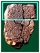
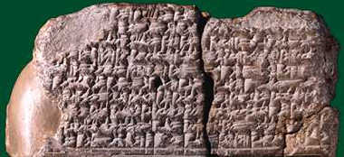

Although the tablet is damaged, this is a description of the things that live in areas
beyond the earth, either in the triangular 'regions' or in the 'Bitter Sea'.
... ruined cities ...
... whom Marduk watches ...
... the ruined gods who ... in the midst of the sea
... serpent, great dragon, between Anzu, scorpion-man
... mountain-goat, gazelle, zebu, leopard, bison
... lion, wolf, stag and hyena
... ape ibex, ostrich, cat, chameleon
... the animal which Marduk created upon the rolling sea
... Ut-Napishtim, Sargon and Nur-Dagan king of
.... their interior on-one knows.
|
back...
|